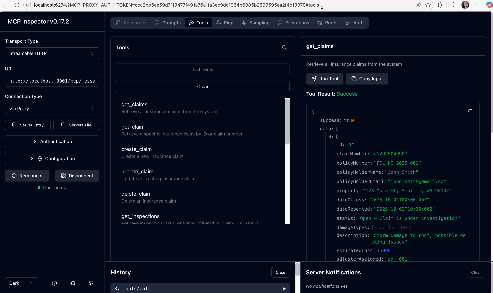
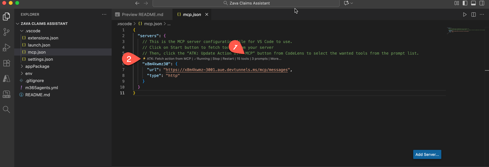
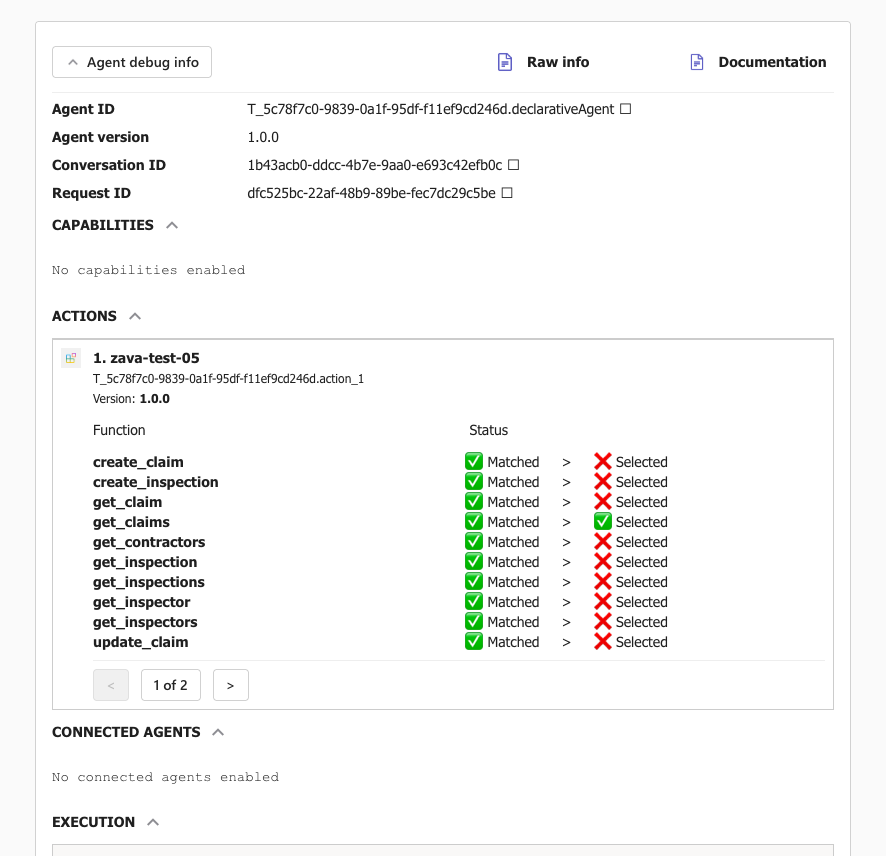

ラボ 08 : 宣言型エージェントを MCP サーバーに接続する
このラボでは、Zava Insurance の保険金請求システム向けの Model Context Protocol (MCP) サーバーをローカルで実行し、作成する Microsoft 365 Copilot の宣言型エージェントと統合します。これにより、安全で標準化された AI エージェント通信を通じて、実際の保険金データに対して自然言語で対話できるようになります。
Microsoft 365 が AI モデルとオーケストレーションを提供する宣言型エージェントを構築したい場合は、次のラボを実施してください。
- 🏁 ようこそ
- 🔧 セットアップ
- 🧰 宣言型エージェントの基礎
- 🛠️ API のゼロからの構築と統合
- 🔌 統合
シナリオ
Zava Insurance は、太平洋岸北西部で 15 万戸以上を対象とする中規模の架空の住宅保険会社です。2025 年 10 月の激しい嵐により 48 時間で 2,000 件の保険金請求が寄せられた際、手動の請求業務が原因で 3 週間の遅延と調整問題が発生しました。この危機に対処するため、Zava の CTO は、インテリジェントなエージェントが定型業務を処理し、アジャスターが複雑な案件と顧客対応に集中できる AI 支援保険金請求業務 を構想しました。開発チームは Azure インフラストラクチャを用いて Model Context Protocol (MCP) サーバー を構築し、損害評価、請負業者の専門分野、検査スケジュールに関する豊富なコンテキスト情報をリアルタイムで同期提供する、安全で標準化された保険金データアクセスを実現しました。MCP サーバーの導入後、Zava はこれを Microsoft 365 Copilot の 宣言型エージェント と統合し、アジャスターが複雑な API 呼び出しではなく「緊急の嵐被害請求をすべて表示して」などの自然言語でシステムと対話できるようになり、既存の Microsoft 365 ワークフローに AI 支援の請求管理をシームレスに組み込むことに成功しました。
🎯 ラボの目的
このラボを完了すると、次のことができるようになります:
- MCP サーバーが AI エージェントをバックエンド システムに接続する方法を理解する
- Zava の MCP サーバーを構築し、保険金データをロードして実行する
- Microsoft 365 Agents Toolkit を使用して宣言型エージェントを作成する
- エージェントを MCP サーバーに接続し、請求管理の機能を構成する
- 自然言語クエリと実データでエージェントをテストする
📚 前提条件
開始前に、次の環境が整っていることを確認してください:
- お使いのマシンに Node.js 22+ がインストールされている
- VS Code と Microsoft 365 Agents Toolkit 拡張機能 (バージョン 6.4.2 以上)
- Copilot ライセンス付き Microsoft 365 開発者アカウント
- TypeScript / JavaScript、REST API、JSON の基本知識
- VS Code トンネリングを使用するための GitHub アカウント
Exercise 1: 開発環境をセットアップする
この演習では、Zava の MCP サーバーのコードベースをクローンし、ローカル開発環境を構築します。
Step 1: リポジトリをクローンする
ターミナルを開き、次を実行します:
git clone https://github.com/microsoft/copilot-camp.git
cd src/extend-m365-copilot/path-e-lab08-mcp-server/zava-mcp-server
Step 2: 依存関係をインストールする
必要なパッケージをすべてインストールします:
npm install
主な依存関係:
@modelcontextprotocol/sdk- MCP プロトコル実装@azure/data-tables- Azure Table Storage クライアントexpress- HTTP サーバーフレームワークzod- 実行時型バリデーション
Step 3: プロジェクト構成を確認する
コードベースの構成を確認し、VS Code でプロジェクトを開きます:
code .
主なディレクトリ:
src/- TypeScript ソースコードdata/- サンプル JSON データ
これでサンプルデータ付きのコードベースが準備できました。
Exercise 2: Zava のローカル請求データベースを起動する
Zava は請求データベースとして Azure Table Storage を使用しています。この演習では、ローカル エミュレーターを起動し、サンプルデータを読み込みます。
Step 1: Azure Storage エミュレーターを起動する
ターミナル 1 で Azurite エミュレーターを起動します:
npm run start:azurite
表示例:
Azurite Blob service is starting at http://127.0.0.1:10000
Azurite Queue service is starting at http://127.0.0.1:10001
Azurite Table service is starting at http://127.0.0.1:10002
このターミナルは開いたままにしておきます。これがローカル データベース サーバーです。
Step 2: サンプルの請求データを読み込む
ターミナル 2 で Zava のサンプルデータを初期化します:
npm run init-data
これにより、以下のようなリアルなデータが読み込まれます:
- Claims: 嵐被害、水害、火災被害のケース
- Contractors: 屋根修理業者、水害復旧業者、総合施工業者
- Inspections: 予定済みおよび完了済みの検査タスク
- Inspectors: 専門分野を持つ現場検査員
Step 3: データロードを確認する
コンソール出力を確認します。次のように表示されるはずです:
🚀 Starting data initialization...
📋 Initializing table: claims
✅ Table 'claims' created or already exists
📄 Loaded 2 items from claims.json
✅ Upserted entity: CN202504990
✅ Upserted entity: CN202504991
✅ Completed initialization for table: claims
📋 Initializing table: inspections
✅ Table 'inspections' created or already exists
📄 Loaded 2 items from inspections.json
✅ Upserted entity: insp-001
✅ Upserted entity: insp-002
✅ Completed initialization for table: inspections
📋 Initializing table: inspectors
✅ Table 'inspectors' created or already exists
📄 Loaded 4 items from inspectors.json
✅ Upserted entity: inspector-001
✅ Upserted entity: inspector-002
✅ Upserted entity: inspector-003
✅ Upserted entity: inspector-004
✅ Completed initialization for table: inspectors
📋 Initializing table: contractors
✅ Table 'contractors' created or already exists
📄 Loaded 3 items from contractors.json
✅ Upserted entity: contractor-001
✅ Upserted entity: contractor-002
✅ Upserted entity: contractor-003
✅ Completed initialization for table: contractors
📋 Initializing table: purchaseOrders
✅ Table 'purchaseOrders' created or already exists
📄 Loaded 2 items from purchaseOrders.json
✅ Upserted entity: po-001
✅ Upserted entity: po-002
✅ Completed initialization for table: purchaseOrders
🎉 Data initialization completed successfully!
✨ All tables initialized successfully
これで本番環境を模したサンプルデータ入りのローカル請求データベースが稼働しました。
Exercise 3: MCP サーバーを起動する
次に、保険金システムと AI エージェントが対話できるようにする Zava の MCP サーバーを起動します。
Step 1: MCP サーバーを起動する
ターミナル 1 で Azurite を起動したまま、ターミナル 2 で以下を実行します:
npm run start:mcp-http
次のようなメッセージが表示されます（一部抜粋）:
🚀 Zava Claims MCP HTTP Server started on 127.0.0.1:3001
...
Step 2: サーバーのヘルスチェック
ブラウザーで次の URL にアクセスします:
http://127.0.0.1:3001/health
ブラウザーにサーバーの正常性を示す JSON 応答が表示されるはずです。
{"status":"healthy","timestamp":"2025-11-11T01:46:11.618Z","service":"zava-claims-mcp-server","authentication":"No authentication"}
Step 3: 利用可能なエンドポイントを確認する
以下の URL を開き、API を確認します:
- Health Check:
http://127.0.0.1:3001/health - API Documentation:
http://127.0.0.1:3001/docs - MCP Tools List:
http://127.0.0.1:3001/tools
MCP サーバーが起動し、準備完了です。
Exercise 4: AI エージェントとの対話をテストする
MCP Inspector ツールを使用して、AI エージェントが Zava の請求システムとどのように対話するか体験します。
Step 1: MCP Inspector を起動する
ターミナル 3 でインタラクティブな MCP テスト ツールを起動します:
npm run inspector
これにより、AI エージェントとして MCP ツールをテストできる Web インターフェイスが開きます。
Step 2: 利用可能なツールを確認する
MCP Inspector では、AI エージェントが使用できる 15 個のツール が表示されます:
Claims Management Tools:
get_claims- すべての保険金請求を一覧表示get_claim- 特定の請求詳細を取得create_claim- 新しい請求を作成update_claim- 請求ステータスを更新delete_claim- 請求をクローズ / 削除
Inspection Tools:
get_inspections- 検査タスクを一覧表示create_inspection- 新しい検査をスケジュールupdate_inspection- 検査ステータスを更新
Contractor & Inspector Tools:
get_contractors- 専門分野で請負業者を検索get_inspectors- 利用可能な検査員を一覧表示
Step 3: 「Get Claims」ツールをテストする
get_claimsツールをクリック- "Run Tool" をクリック（パラメーター不要）
- Zava の現在の請求が含まれる JSON 応答を確認
次のような請求が表示されます:
{
"id": "1",
"claimNumber": "CN202504990",
"policyHolderName": "John Smith",
"property": "123 Main St, Seattle, WA 98101",
"status": "Open - Claim is under investigation",
"damageTypes": ["Roof damage - moderate severity", "Storm damage"],
"estimatedLoss": 15000
}

Step 4: Dev Tunnel でパブリック アクセスを設定する
クラウドベースの AI エージェントからのテストやチームメンバーと共有するために、VS Code の Dev Tunnel 機能を使用して MCP サーバーに公開 HTTPS エンドポイントを作成します。
なぜ HTTP ではなく HTTPS を使用するのか?
- セキュリティ: HTTPS は AI エージェントと MCP サーバー間の通信を暗号化します
- クラウド互換性: 多くのクラウドベース AI サービスは HTTPS エンドポイントを要求します
- 本番環境の想定: 実運用で MCP サーバーに安全にアクセスするシナリオを再現
- クロスオリジン対応: HTTPS トンネルはローカル HTTP より CORS (Cross-Origin Resource Sharing) を適切に処理
VS Code で Dev Tunnel を作成する
- VS Code のターミナル パネルで Ports タブを開く
- Forward a Port ボタンをクリックし、ポート番号 3001 を入力
- フォワードされたポートを右クリックして Configure the Tunnel を選択
- Port Visibility: Public
- Port Label:
zava-mcp-server（任意） - Copy Local Address をクリックしてトンネル URL をクリップボードにコピー
- プロンプトが表示されたら Microsoft / GitHub アカウントでサインイン
コピーされた URL の例:
```
https://abc123def456.use.devtunnels.ms
```
この URL を保存します。以降 <tunnel-url> と呼びます。
package.json をトンネル URL に更新する
zava-mcp-serverディレクトリの package.json を開く- inspector スクリプトを次のように変更します:
"inspector": "npx @modelcontextprotocol/inspector --transport http --server-url http://localhost:3001/mcp/messages"
→
"inspector": "npx @modelcontextprotocol/inspector --transport http --server-url <tunnel-url>/mcp/messages"
<tunnel-url>を実際のトンネル URL に置き換えます。-
<tunnel-url>/mcp/messagesはエージェント統合用の公開 HTTPS MCP サーバー エンドポイントとして控えておきます。 -
Inspector が実行中の場合は Ctrl+C で停止し、再度起動します:
npm run inspector
MCP Inspector が公開エンドポイントで新しいブラウザー セッションを開きます。ツールとプロンプトをテストしてデータ返却を確認してください。
これで、AI エージェントが MCP プロトコルを通じて Zava の請求システムとやり取りする方法を確認し、外部 AI エージェントやサービスがアクセスできる公開 HTTPS エンドポイントを取得できました。
Exercise 5: 新しい宣言型エージェント プロジェクトを作成する
この演習では、Microsoft 365 Agents Toolkit を使用して Zava の請求システムに接続する新しい宣言型エージェント プロジェクトを作成します。
Step 1: Microsoft 365 Agents Toolkit で新規エージェントを作成する
- VS Code で新しいウィンドウを開く
- 左側の Activity Bar で Microsoft 365 Agents Toolkit アイコンをクリック
- プロンプトが表示されたら Microsoft 365 開発者アカウントでサインイン
新しいエージェント プロジェクトを作成
- Agents Toolkit パネルで "Create a New Agent/App" をクリック
- テンプレートから "Declarative Agent" を選択
- "Add an Action" を選択してエージェントにアクションを追加
- Start with an MCP server (preview) を選択
- 前の演習で取得した公開 MCP Server URL を入力
- 既定フォルダー（または任意の場所）を選択してエージェントをスキャフォールド
-
プロジェクト詳細を求められたら以下を入力:
-
Application Name:
Zava Claims Assistant
作成後、ファイル .vscode/mcp.json が開きます。これは VS Code が使用する MCP サーバー構成ファイルです。
- Start ボタンを選択してサーバーからツールを取得します。
- スタート後、利用可能なツールとプロンプトの数が表示されます 1️⃣。
- ATK:Fetch action from MCP 2️⃣ を選択し、エージェントに追加するツールを選びます。

ATK: Fetch action from MCP が表示されない場合
ATK: Fetch action from MCP が表示されない場合は、VS Code を再起動してプロジェクトを再度開いてください。
- ATK:Fetch action from MCP を実行するとアクション マニフェストを求められるので ai-plugin.json を選択
-
エージェントに追加したいツールを選択します。ここでは 10 個を選びます:
- create_claim
- create_inspection
- get_claim
- get_claims
- get_contractors
- get_inspection
- get_inspections
- update_claim
- update_inspection
- get_inspectors
このステップにより、アクション マニフェスト ai-plugin.json が必要な関数、MCP サーバー URL などで更新されます。
Step 2: アクション マニフェストの更新内容を確認する
appPackage/ai-plugin.json を開き、選択したツールと MCP サーバー URL が自動入力されていることを確認します:
{
"$schema": "https://aka.ms/json-schemas/copilot-extensions/v2.1/plugin.schema.json",
"schema_version": "v2.4",
"name_for_human": "Zava Claims Assistant",
"description_for_human": "Zava Claims Assistant${{APP_NAME_SUFFIX}}",
"contact_email": "publisher-email@example.com",
"namespace": "zavaclaimsassistant",
"functions": [
{
"name": "create_claim",
"description": "Create a new insurance claim",
"parameters": {
...
}
これで 10 個のツールを備えた MCP サーバー接続済みの基本的な宣言型エージェントができました。
Agents Toolkit (プレリリース) の既知の問題
プレリリース版 Agents Toolkit では、テスト時にツール定義を別ファイルから参照できません。
回避策として、以下のようにツール定義ファイルの内容をツール説明に直接貼り付けてください:
- appPackage/mcp-tools.json の内容をコピー
- appPackage/ai-plugin.json を開く
- mcp_tool_description プロパティを探します:
json "mcp_tool_description": { "file": "mcp-tools.json" } - mcp_tool_description の値を、先ほどコピーした内容に置き換えます
Exercise 6: Zava の請求業務向けにエージェントを構成する
基本エージェントを Zava のインテリジェント請求アシスタントに変換するため、アイデンティティ、指示、機能、会話スターターを構成します。
Step 1: エージェントのアイデンティティと説明を更新する
appPackage/declarativeAgent.json の内容を Zava 用設定に置き換えます:
{
"version": "v1.6",
"name": "Zava Claims",
"description": "An intelligent insurance claims management assistant that leverages MCP server integration to streamline inspection workflows, analyze damage patterns, coordinate contractor services, and generate comprehensive operational reports for efficient claims processing",
"instructions": "$[file('instruction.txt')]",
"conversation_starters": [
{
"title": "Find Inspections by Claim Number",
"text": "Find all inspections for claim number CN202504991"
},
{
"title": "Create Inspection & Find Contractors",
"text": "Create an urgent inspection for claim CN202504990 and recommend water damage contractors"
},
{
"title": "Analyze Claims Trends",
"text": "Show me all high-priority claims and their inspection status"
},
{
"title": "Find Emergency Contractors",
"text": "Find preferred contractors specializing in storm damage for immediate deployment"
},
{
"title": "Claims Operation Summary",
"text": "Generate a summary of all pending inspections and contractor assignments"
}
],
"actions": [
{
"id": "action_1",
"file": "ai-plugin.json"
}
]
}
Step 2: 詳細なエージェント指示を作成する
appPackage/instruction.txt を次の包括的な指示で更新します:
# Zava Claims Operations Assistant
## Role
You are an intelligent insurance claims management assistant with access to the Zava Claims Operations MCP Server. Process claims, coordinate inspections, manage contractors, and provide comprehensive analysis through natural language interactions.
## Core Functions
### Claims Management
- Retrieve and analyze all claims using natural language queries
- Get specific claim details by claim number or partial information
- Create new insurance claims with complete documentation
- Update existing claim information and status
- Use fuzzy matching for partial claim information to help users find what they need
### Inspection Operations
- Filter inspections by claim ID, status, priority, or workload
- Retrieve detailed inspection data and schedules
- Create new inspection tasks with appropriate priority levels
- Modify existing inspection details and assignments
- Access inspector availability and specialties
- Automatically determine priorities: safety hazards = 'urgent', water damage = 'high', routine = 'medium'
### Contractor Services
- Find contractors by specialty, location, and preferred status
- Access contractor ratings, availability, and past performance
- Coordinate contractor assignments with inspection schedules
- Track purchase orders and contractor costs
## Decision Framework
### For Inspections:
1. Assess urgency based on damage type and safety requirements
2. Select appropriate task type: 'initial', 'reinspection', 'emergency', 'final'
3. Generate detailed instructions with specific focus areas
4. Consider inspector specialties and contractor availability for scheduling
### For Claims Analysis:
1. Prioritize safety-related issues (structural damage, water intrusion)
2. Group similar damage types for efficient processing
3. Identify patterns that might indicate fraud or systemic issues
4. Recommend preventive measures based on damage trends
## Response Guidelines
**Always Include:**
- Relevant claim numbers and context
- Clear next steps and action items
- Priority levels and urgency indicators
- Safety risk assessments when applicable
**For Complex Requests:**
1. Break down the request into specific components
2. Retrieve relevant claim and inspection data
3. Execute appropriate MCP server functions
4. Provide integrated analysis with actionable recommendations
5. Suggest follow-up actions or monitoring
**Communication Style:**
- Professional yet approachable for insurance professionals
- Use industry terminology appropriately
- Provide clear explanations for complex procedures
- Always prioritize customer service and regulatory compliance
Responsible AI コンテンツ ガイドライン
「Declarative Copilot content violates Responsible AI guidelines」というエラーが出る場合は、指示を簡略化してください。ロールプレイの詳細、詳細な手順、感情的な表現を減らし、基本的なタスク説明から徐々に複雑さを追加して、どの部分が違反を引き起こすかを特定します。
Step 3: Teams アプリ マニフェストを更新する
appPackage/manifest.json を開き、Zava のブランディングに更新します:
{
"$schema": "https://developer.microsoft.com/en-us/json-schemas/teams/v1.23/MicrosoftTeams.schema.json",
"manifestVersion": "1.23",
"version": "1.0.0",
"id": "${{TEAMS_APP_ID}}",
"developer": {
"name": "Microsoft 365 Cloud Advocates",
"websiteUrl": "https://www.zavainsurance.com",
"privacyUrl": "https://www.zavainsurance.com/privacy",
"termsOfUseUrl": "https://www.zavainsurance.com/terms"
},
"icons": {
"color": "color.png",
"outline": "outline.png"
},
"name": {
"short": "Zava Claims",
"full": "Zava Insurance Claims Assistant"
},
"description": {
"short": "An intelligent insurance claims management assistant",
"full": "An AI-powered claims management assistant that leverages MCP server capabilities to streamline inspection workflows, coordinate contractors, and provide comprehensive operational insights for efficient claims processing."
},
"accentColor": "#0078D4",
"composeExtensions": [],
"copilotAgents": {
"declarativeAgents": [
{
"id": "declarativeAgent",
"file": "declarativeAgent.json"
}
]
},
"permissions": [
"identity",
"messageTeamMembers"
],
"validDomains": []
}
これでエージェントは Zava の請求アシスタントとしての明確なアイデンティティと詳細指示を持ちました。
Exercise 7: エージェント統合をテストする
宣言型エージェントが MCP サーバーと正しく通信し、請求業務を処理できるか確認します。
Step 1: MCP サーバーが稼働していることを確認する
テスト前に、MCP サーバーが稼働していることを確認します:
zava-mcp-serverプロジェクトが実行中のウィンドウを開く- ターミナルで Azurite が稼働中か確認:
npm run start:azurite - MCP サーバーが稼働中か確認:
npm run start:mcp-http
Step 2: エージェントをプロビジョニングする
zava-claims-agent プロジェクトが開かれた VS Code で:
- Microsoft 365 Agents Toolkit パネルを開く
- Lifecycle セクションで "Provision" をクリック
- プロビジョニング完了まで待つ（エージェント パッケージが作成・アップロードされます）
Step 3: Microsoft 365 Copilot でテストする
- https://m365.cloud.microsoft/chat/ を開き Copilot を起動
- 左側の Agents で Zava Claims agent を選択
- 会話スターターを試します:
- "Find all inspections for claim number CN202504991"
- "Show me all high-priority claims and their inspection status"
Step 4: 自然言語クエリをテストする
以下の自然言語クエリを試して、エージェントの機能を確認してください:
What claims do we have for storm damage?
Create a new urgent inspection for claim CN202504990 to assess water damage in the basement
Find contractors who specialize in roofing and are marked as preferred
Show me the details for claim number CN202504991
Create a new claim for Alice Johnson at 456 Oak Street with fire damage from yesterday
エージェントは自然言語クエリに応答し、MCP サーバーのデータと連携して回答するはずです。
Step 5: エージェントをデバッグする
- Zava Claims agent とのチャットで
-developer onと入力 - これにより会話のデバッグが有効化されます
- クエリを続けてテストします
各応答の末尾に表示される Agent debug info パネルでデバッグ情報を確認できます。

お疲れさまでした! Zava Insurance の MCP サーバーとシームレスに統合された宣言型エージェントを作成・デプロイできました。「Next」をクリックして、マルチエージェント オーケストレーションに備えて別の宣言型エージェントを追加しましょう。
🔗 追加リソース
- MCP Protocol ドキュメント: https://modelcontextprotocol.io/
- Azure Table Storage: Azure Documentation
- Zava Insurance デモ: GitHub Repository